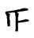
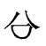
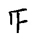
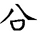
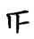
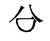

玄同兄：两封来信都收到了。子秘已偕□妻□子到京、[210]现在住在山会邑馆[211]间壁曹宅里面、门牌是第五号。
关于《新村》的事、两面都登也无聊、我想《新青年》上不登也罢、因为只是一点记事、不是什么大文章、不必各处登载的。
黄棘[212]不是孙伏公、单知道他住在鲁镇、不知道别的、伏即福源、来信说的都对、写信给他、直寄“或


□”[213]就是、他便住在那里、バラトル是一种鱼肝油、并非专医神经的药、但身体健了、神经自然也健、所以也可吃得的、这药有两种、一种红包瓶外包纸颜色、对于肺病格外有效、一种蓝包是普通强壮剂、为神经起见、吃蓝包的就够了。迅 八月十三日
注 释
[209] 此信原件以顿号作逗号用。
[210] 子秘已偕□妻□子到京 据鲁迅1919年8月10日日记：“午后二弟、二弟妇、丰、谧、蒙及重久君自东京来，寓间壁王宅内。”
[211] 山会邑馆 绍兴县馆的旧称，在北京宣武门外南半截胡同。鲁迅于1912年5月6日至1919年11月21日在此居住。
[212] 黄棘 鲁迅笔名。1919年8月12日在《国民公报》发表《寸铁》四则时曾署此名。
[213] “或


□” 即《国民公报》。孙伏园当时任该报副刊编辑。或，国的古字。许慎《说文解字》第十二篇：“或，邦也。”清代段玉裁注：“古文祗有或字，既乃复制国字。”
，金文“民”字的变体。
，金文“公”字。□，阙文符号，意为此字请收信人推断。《国民公报》，原为君主立宪派的日报，1910年8月创刊于北京。1919年10月被北洋政府查封。